从输入与输出开始，理解权重、偏置和激活函数怎样共同参与计算。
Transformer 是一种神经网络架构。要理解它如何处理信息，可以先从更基础的计算单元——人工神经元——入手，再逐步观察多个单元如何连接、怎样计算输出，以及参数如何通过训练得到调整。
本章先建立输入、输出、权重、偏置和激活函数的关系。后续涉及反向传播时，再进一步引入导数、偏导数与链式法则。这样可以把每个数学符号与具体计算对应起来，避免只记住术语。
这与学习编程时理解循环和数组类似：语法本身可能不长，但需要通过例子形成处理问题的思路。学习神经网络也需要同时理解公式的含义与使用条件，而不仅仅是背诵表达式。
神经元示意图提供了“接收多个信号、产生输出”的直观入口。下面将把这一概念转成可以计算的数学模型。
典型的生物神经元通过树突和细胞体等结构接收信息，并通过轴突向其他细胞传递信号。轴突可以分支，因而一个神经元能够影响多个后续神经元。这种结构为人工神经网络提供了启发。
在本章的简化计算模型中，一个人工神经元接收多个数值输入，经过计算后产生一个数值输出；这个输出可以被多个下游计算单元使用。多个输入可能不同，但分发给下游的是同一个计算结果。
这一类比用于理解连接关系，并不是完整的生物学描述。真实神经元的形态、信号与动力学远比一个加权求和公式复杂，不能据此认为人工网络已经复制了大脑。
图中可见接收信息的多个分支，以及向其他细胞延伸的连接结构。人工模型保留了“多输入、单输出、输出可继续传递”的抽象关系。
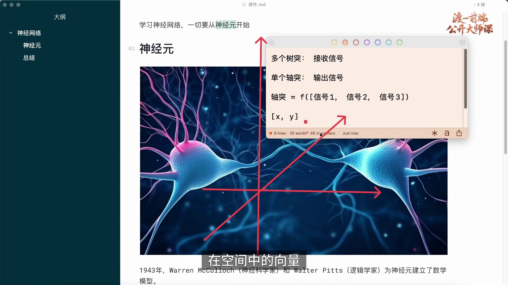
把多个输入记为 x₁、x₂、…、xₙ，可以组成向量 x=[x₁,x₂,…,xₙ]。单个神经元对这个向量进行计算，产生一个标量输出 y，即一个数值。
二维向量 [2,1] 可以用平面中的点理解，三维向量 [1,2,3] 可以对应空间中的点。输入维度进一步增加时，虽然不容易画出直观图形，仍然可以按同样的数学规则计算。
在程序中，输入向量可以用一维数组或张量表示。这里的“维度为 n”指向量有 n 个分量，与程序中“数组有几条轴”并不是同一个概念：包含一千个分量的向量，仍可存放在一个一维数组中。
因此，可以先用 y=f(x) 表示这个计算单元，再进一步展开 f 的内部计算。输出是一个标量，并不意味着整个神经网络只能有一个输出；多个单元可以组成输出向量。
二维和三维坐标帮助理解多个分量组成的向量。坐标是低维示意，高维输入无需先被画成几何图形，才能参与计算。
1943 年，Warren McCulloch 与 Walter Pitts 提出了早期的人工神经元模型，用简化的阈值逻辑研究神经活动。现代常见的可训练神经元可以用加权求和与激活函数描述，但不能把它与最初的二值逻辑模型完全等同。
常见计算形式为：z=w₁x₁+w₂x₂+…+wₙxₙ+b，y=φ(z)。其中，xᵢ 是第 i 个输入，wᵢ 是与该输入对应的权重，b 是偏置，φ 是激活函数。求和应覆盖全部输入，直到 wₙxₙ。
权重和偏置是这类单元中的可训练参数。激活函数把加权结果转换为输出，并通常引入非线性；如果多层只包含线性或仿射变换，叠加后仍然可以合成为一个仿射变换，表达能力会受到限制。
公式有时写成 y=σ(Σwᵢxᵢ+b)。需要根据上下文判断 σ 是泛指激活函数，还是特指 Sigmoid。本章使用 φ 表示一般激活函数，以避免混淆。
公式中每个输入都与一个权重相乘，再统一加上偏置。1943 年的历史模型与下方的现代通用表达有关联，但其具体假设、输出形式和训练方式并不相同。
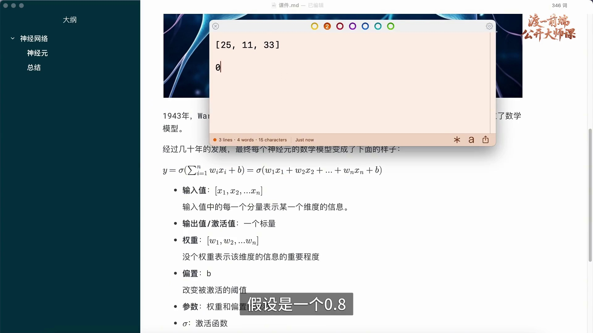
输入和输出的业务含义由任务设计决定。例如，用 [25,11,33] 表示一个样本，并约定 25 对应 2025 年、11 对应某个职业类别、33 表示以万元计的年薪。这些约定使业务数据可以进入数值计算。
假设目标是预测下一年的薪资变化，输出 y 也必须有明确含义。若约定输出是增长率，则 0.8 表示 80%；若约定输出是标准化后的某个指标，则需要按照相应规则解释或还原。一个数值不会仅凭自身大小自动获得业务意义。
这个例子用于理解输入、目标和输出之间的约定，并不表示三个数值或单个神经元足以可靠预测薪资。实际建模还需要数据、特征设计、训练与验证。
职业编号属于类别信息，编号 11 并不天然比编号 10“多一个单位”。实际处理时通常需要合适的类别编码，而不是未经分析就把任意编号当作连续量。
三维向量展示了数字与业务字段的对应关系。年份、职业类别和薪资具有不同性质，编码和单位应在模型训练与使用时保持一致。
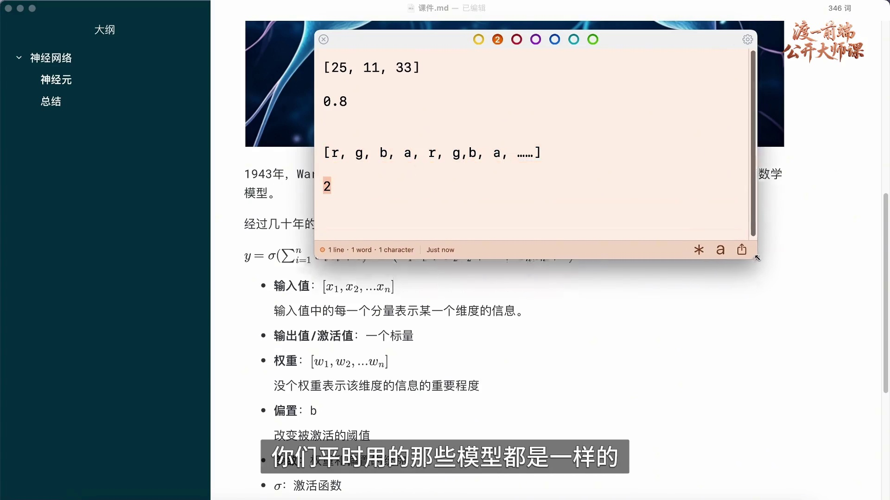
图像可以表示为像素数值。彩色图像常有 R、G、B 三个颜色通道；带透明度的图像还可能包含 A 通道。按固定顺序展开后，可以得到一个包含大量分量的向量。
如果任务是识别动物，可以事先定义类别编号，例如编号 2 对应猫。模型输出再经过约定的决策或解码规则，得到类别结果。对于多分类任务，更常见的做法是输出各类别的分数，再选择或进一步处理这些分数。
模型执行的是数值运算，但数字之间可以通过训练形成与任务有关的结构和规律。“以数字计算”不等于“完全不能学习语义关系”；模型获得哪些能力，应由其训练目标与实际表现来判断，而不是用它是否像人一样理解来代替评估。
无论输入代表年份、职业还是像素，都需要明确表示方式。单个神经元的输出通常称为激活值；整个网络可以将许多这样的数值继续组合，最终形成所需结果。
便笺把业务特征与像素的 r、g、b、a 序列并列。相同的数值运算结构可以接收不同任务的数据，但编码顺序、尺度和输出解释需要由任务明确规定。
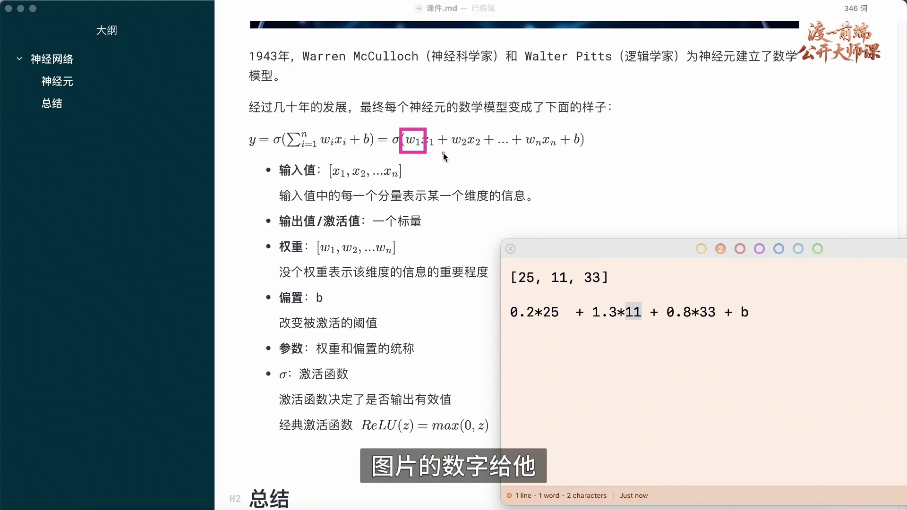
对于固定输入，加权和中的每一项 wᵢxᵢ 都会影响结果。改变权重，就会改变对应输入对 z 的贡献；权重可以为正、为负或为零，分别体现不同方向和程度的作用。
仍以 [25,11,33] 为例，表达式为 z=w₁×25+w₂×11+w₃×33+b。若使用示意权重 0.3、1.2、0.8，则未加偏置的结果为 7.5+13.2+26.4=47.1。另一组 0.2、1.3、0.8 则得到 5+14.3+26.4=45.7。两组数字是不同参数设置，不能混为同一组计算。
权重可以帮助理解特征如何影响当前模型，但不能直接比较不同量纲下的权重大小，并据此断定哪项特征“更重要”。输入尺度、特征相关性和后续非线性都会影响解释，因此常需要适当的预处理和专门的分析方法。
参数最终应通过训练确定，并用未参与训练的数据评估。找到一组能解释几个样本的权重，不代表它对任意输入都能给出正确结果。
便笺中的 0.2×25+1.3×11+0.8×33+b 对应一组示意参数，其加权部分为 45.7。它不是经过验证的薪资模型，也不能与其他示意权重混算。
激活值是经过激活函数处理后的输出。可以用颜色或亮度表示它的大小，但“亮”与“暗”只是可视化方式，不表示人工神经元具有生物意义上的清醒或休眠状态。
不同激活函数有不同输出范围。ReLU 的输出不小于零；Sigmoid 的输出位于 0 与 1 之间；tanh 可以产生负值。因此，“所有神经元的输出都不能是负数”并不成立。
对于 ReLU，可以把输出 0 理解为该单元在这次计算中没有产生正激活。输出 0.2、0.5 或更大的数值表示不同大小的激活，但是否算“大”，还取决于网络和数据尺度。ReLU 的正向输出没有固定上限。
负数也不是天然无意义或必然干扰运算。ReLU 将负的输入映射为零，是该函数的定义；选择其他函数时，负值可能被保留并参与后续计算。
神经元示意图用于解释输入与输出关系。输出是否非负，必须结合所选激活函数判断，不能仅凭“激活”这个名称推断。
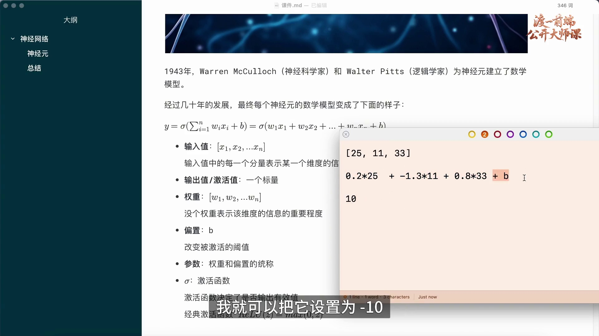
偏置 b 加在所有加权输入之和后，使模型可以整体平移响应位置，而不必只依靠调整各个权重。对于 ReLU，y=max(0,w·x+b)，这可以直观地表现为正激活门槛的移动。
可以借“饥饿感达到一定程度才引起注意”理解门槛：并不是任何微小变化都会立刻引发明显响应。这个日常类比只帮助理解阈值，不是对人体饥饿机制的数学建模。
若希望加权和 s=w·x 大于 10 时才产生正输出，可以令 b=−10。此时 s=5 时，s+b=−5，ReLU 输出 0；s=10 时输出仍为 0；s 大于 10 后才出现正输出。
若令 b=10，则当 s=−10 时刚好到达零点；s 再增加一点，就产生正输出。可以用“超过一道门槛才有响应”帮助理解，但精确条件仍应以所用函数的公式为准。
并非所有激活函数都存在这样的硬门槛。对平滑函数而言，偏置同样改变输入落在函数曲线的哪个位置，但不一定对应“未激活／激活”的二元切换。
公式末尾的正、负偏置改变了加权结果的位置。“改变激活阈值”在 ReLU 等相应例子中具有直观意义，更一般的描述是调整仿射变换的平移项。
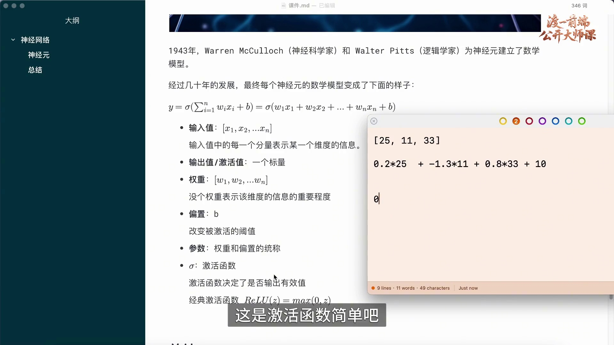
ReLU 定义为 ReLU(z)=max(0,z)。当 z 为负数时输出 0；当 z 为正数时保留 z；z=0 时输出 0。例如，z=−10 对应输出 0，z=2 对应输出 2。
使用它计算一个神经元，可以依次进行三步：先求每个输入与相应权重的乘积并求和，再加偏置，最后应用 ReLU。输入、参数和函数确定之后，结果也随之确定。
ReLU 是常见的非线性激活函数之一，其他选择包括 Sigmoid、tanh 及多种变体。函数的适用性取决于网络位置与任务需求，不能把一种函数的输出性质推广到所有神经元。
公式将线性组合与非线性激活分开：先计算 z=Σwᵢxᵢ+b，再计算 y=ReLU(z)。权重与偏置合称为这个单元的参数。
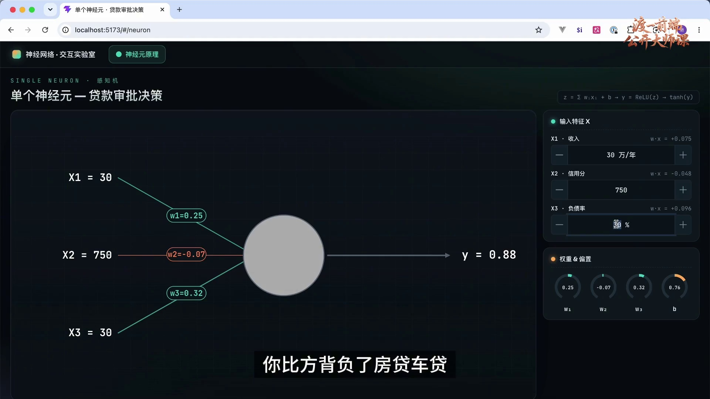
交互页面把输入、参数和输出放在同一界面，便于观察单个神经元的计算关系。配套工程使用 Makefile 时，可在工程目录运行 make install 安装依赖，再运行 make dev 启动开发服务。
示例命令的 install 目标进入 HTML 目录并执行 pnpm install；dev 目标还会执行 pnpm dev。启动后，使用终端实际输出的地址访问页面。示例地址为 localhost:5173/#/neuron；这些命令和地址属于配套工程，不是任意项目都通用的约定。
两个目标对应的命令分别是 cd HTML && pnpm install，以及 cd HTML && pnpm install && pnpm dev。若直接执行这些命令，需要先确认当前目录与工程的文件组织一致。
页面中的三个输入分别用年收入、信用分和负债率表示。初始示例为年收入 30 万元、信用分 750、负债率 30%。这组字段只是一个方便观察计算的假设任务。
中间的圆形表示计算单元，连线标出权重，右侧控件分别调整权重与偏置。操作时先固定输入，再改变一个参数，能够更清楚地观察该参数对输出的影响。
“单个神经元—贷款审批决策”页面分开显示输入特征与参数。单位、信用分尺度和特征处理需要结合实际实现理解，不能直接把演示结果当作真实授信规则。
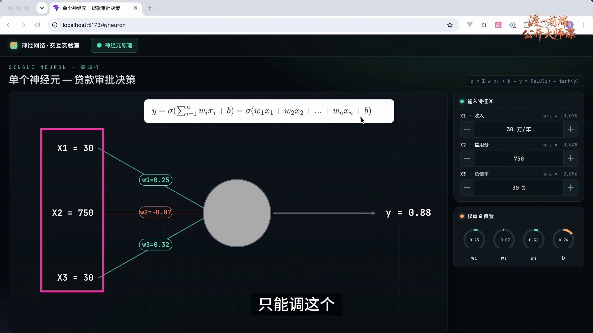
公式中的 x₁、x₂、x₃ 来自当前样本，w₁、w₂、w₃ 和 b 是此演示中可以训练或调节的参数。对于一个给定样本，参数变化会改变预测；换一个样本，即使参数保持不变，预测也可能改变。
激活函数在本次演示中预先选定，调整旋钮时不更换函数。这里的“固定”只表示它是当前架构的设计选择，并不表示激活函数对输出没有影响。
输出含义需要预先定义。若任务是二分类，可以设计适当输出和概率校准，再根据阈值作决策；若任务是预测某个金额，则输出的单位和损失函数需要按回归问题设计。不能在同一评估过程中随意把同一个数值交替解释为概率和金额。
贷款场景中的 50% 阈值只是便于讨论的假设，演示没有提供可用于业务决策的训练与验证依据。这里需要观察的是参数如何改变输出，而不是获得实际审批结论。
三个权重与一个偏置分别对应旋钮。它们控制数值映射；“通过率”或“金额”的含义来自任务定义，不能由圆形的明暗直接判断。
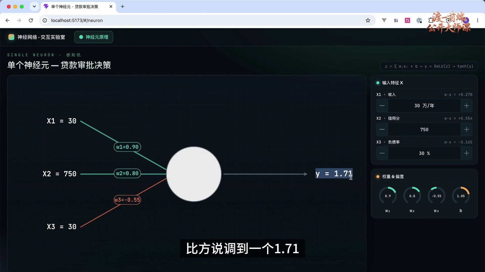
先固定三个输入，再依次改变 w₁、w₂、w₃ 或 b，观察右侧输出以及圆形亮度。一次只改一个参数，有助于辨认输出变化与当前调整的关系。
图中的一次状态显示 w₁=0.90、w₂=0.80、w₃=−0.55、b=1.05；界面列出的三个输入贡献约为 0.270、0.554 和 −0.165。按这些贡献求和并加偏置，可得 1.709，四舍五入后约为 1.71。应使用实际参与计算的数值复算，而不能忽略界面对原始字段可能进行的预处理。
顶部计算链标为 z=Σwᵢxᵢ+b，再经过 ReLU 和 tanh。显示的 1.71 不可能是 tanh 的最终输出，也不能解释成概率；在这一状态下，它与 ReLU 阶段的数值相符。应区分界面显示的中间量、最终变换结果与业务解释。
找到适合一个样本的参数，只是理解调整过程的第一步。接下来还需要检查同一组参数对其他样本的表现。
截图保留了 y=1.71 与顶部的 ReLU→tanh 计算链。tanh 的输出范围是 (−1,1)，因此阅读该界面时不能把 1.71 当成 tanh 输出或审批概率。
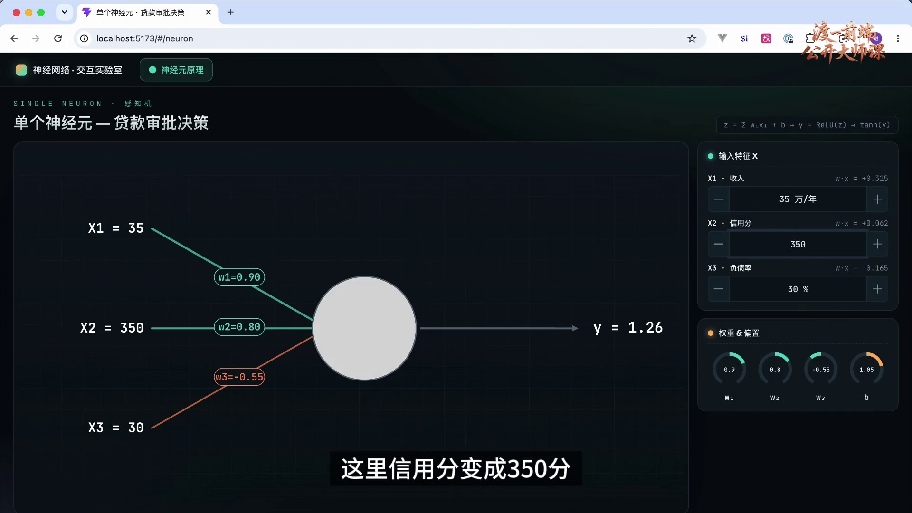
把输入改为年收入 35 万元、信用分 350 等新的数值后，应使用同一组参数计算新的输出，并与该样本的目标比较。只针对一个样本反复调节，可能改善它的结果，却损害其他样本的表现。
训练需要根据一组样本与明确的损失函数，系统地调整参数，而不是由人工为每个输入单独设定一套旋钮。权重与偏置合称为这个模型的参数；网络扩大以后，参数数量也会增加。
优化算法可以根据梯度等信息自动更新大量参数，但训练的目标也不是保证任意输入都绝对正确。需要分别观察训练数据和新数据上的表现，判断模型是否学到了可推广的规律。
单个神经元能够表达的关系有限。通过连接多个单元并引入非线性，可以构成更有表达能力的网络；下一步将研究这些单元之间如何传递和组合数值。
输入字段从 30 万元、750 分等数值变为新的样本，而参数控件仍是同一组。这个对比强调训练需要兼顾多个样本，而不是只修正当前显示的一次结果。
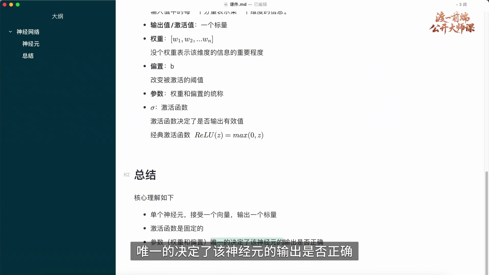
单个神经元可以概括为 y=φ(w·x+b)：输入 x 是向量，w 是权重向量，b 是偏置，φ 是激活函数，输出 y 是标量。
在确定的计算设置下，输入、权重、偏置和函数共同决定输出。固定输入与激活函数后，可以通过改变参数调整结果；固定参数后，不同输入仍会产生不同结果。
训练就是按照学习目标调整可训练参数，使模型在数据上的整体表现改善，并通过独立评估检验泛化能力。这里的简化单元只有权重和偏置可调，其他网络结构也可能包含更多类型的可训练参数。
总结图中的“激活函数固定”指当前演示不改变函数选择；“参数可调”指通过训练或交互改变权重和偏置。两者都参与实际输出计算。